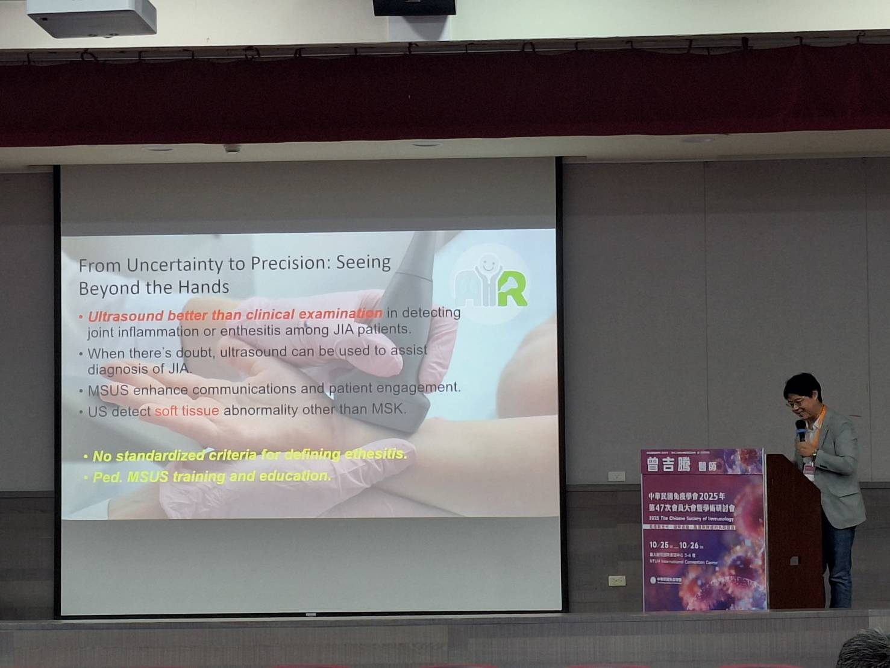
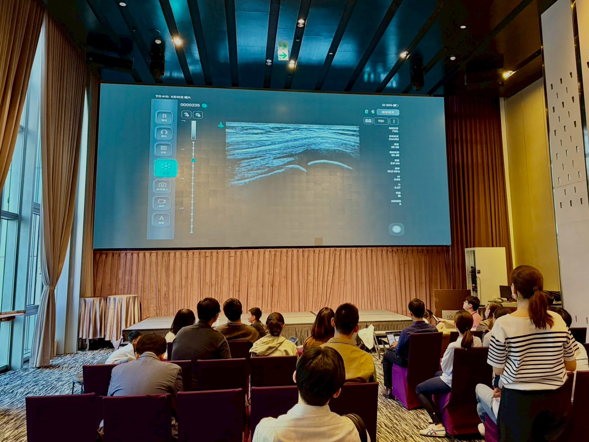
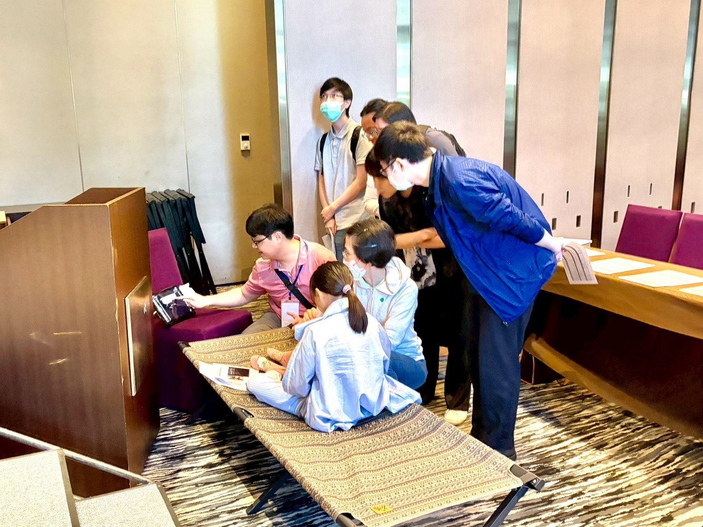
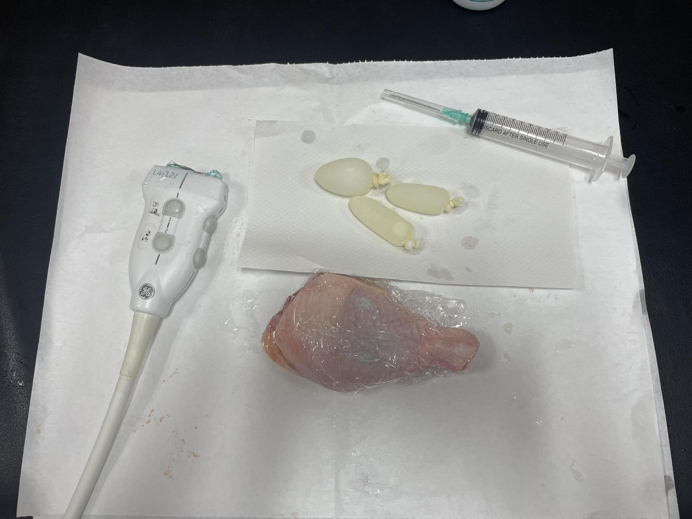

本次工作坊概況
本工作坊聚焦於兒童風濕、免疫、感染與腫瘤情境下的超音波應用，從正常解剖到病理影像、從掃描技巧到臨床決策，建立學員完整的判讀框架。
工作坊核心理念
超音波並非取代理學檢查，而是「延伸的雙手」。透過影像，醫師能夠確認手所摸到的、看見手所摸不到的。
課程涵蓋三大模組
- Module 01 — 關節超音波在兒童的正常表現：OMERACT 2014 五大灰階定義、2018 Doppler 附錄、不同年齡層之影像變化。
- Module 02 — 唾液腺超音波與幼年型乾燥症：腮腺與顎下腺正常解剖、OMERACT/IGUS 五特徵評分、Hocevar 0–3 分級、Color Doppler 分級。
- Module 03 — 兒童頸部淋巴結超音波：腰子型正常、反應性、感染性、Kawasaki、Kikuchi、自體免疫合併、惡性紅旗、新興的剪切波彈性成像。
工作坊現場紀錄照片
以下為本次工作坊現場照片與實作情境：

From Uncertainty to Precision — 開場引言

膝關節 suprapatellar 掃描示範

學員分組實作與一對一指導

自製 baker's cyst 模型：超音波導引抽吸實作
講義與資源下載
以下為本次工作坊延伸學習資源，可下載作為臨床操作時的快速參考。
講義與 Scanning Protocols
Module 01 講義 — 膝關節超音波正常表現
Module 02 講義 — 唾液腺超音波與 JSjS
Module 03 講義 — 兒童頸部淋巴結
Scanning Protocol Checklist — 關節超音波
Scanning Protocol Checklist — 唾液腺
Scanning Protocol Checklist — 頸部淋巴結
關鍵參考文獻
本次工作坊整理之核心文獻。為遵守期刊著作權，以下連結導向各期刊之官方頁面（DOI），請於期刊或機構授權下取閱全文。
Roth J et al. Definitions for the sonographic features of joints in healthy children.
Collado P et al. Amendment of the OMERACT ultrasound definitions when using the Doppler technique.
Hocevar A et al. Ultrasonographic changes of major salivary glands in primary Sjögren's syndrome (novel scoring system).
Ludwig BJ et al. Imaging of cervical lymphadenopathy in children and young adults.
Cañas T et al. Cervical lymph node characterization using point shear wave elastography in pediatric patients.
工作坊延伸 — 院內讀片會與線上互動
主筆者持續於院內舉辦兒科超音波讀片會與案例討論。若有興趣參與或邀請院際聯合讀片，歡迎透過聯絡頁面來信。
下次工作坊資訊
下次工作坊規劃中。報名連結與正式資訊將於本網站與 Blogger 上同步公告。建議您加入聯絡頁面之 email 名單，可獲得第一手通知。